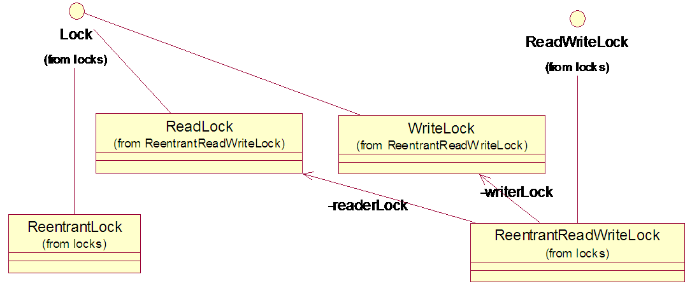

synchronized关键字
synchronized关键字
JDK1.5以前，只能使用synchronized关键字保证线程安全，使用简单方便，随着JDK的升级在性能方面将有所优化。
该关键字是在JVM中，通过设置永久代(方法区)中常量池的ACC_SYNCHRONIZED访问标志来实现。synchronized是悲观锁(独占锁)，
同一时刻只有一个线程能访问，其它线程将挂起，所以效率不高。
注意：synchronized实例方法与synchronized静态方法，互不影响，因为两者锁的内容不同，前者是锁实例，后者是锁Class
一、synchronized作用在实例方法上，锁住当前实例对象(this)(自己理解:必须获取该对象的锁才能访问，访问后自动释放锁)。
1)多个线程同时访问不同实例对象的synchronized方法，互不干扰。
2)多个线程同时访问同一实例对象的synchronized方法(一个或多个)，只能有一个线程访问，其它线程将阻塞等待。
public synchronized int getIndex(){
return index++;
}
二、synchronized作用在静态方法上，锁住当前类的Class实例。Class实例是在永久代，相当于这个类的全局锁。
(自己理解:必须获取该类的锁才能访问，访问后自动释放锁)
同一时刻多个线程间只有一个线程能访问synchronized静态方法。
public synchronized static int incNum(){
return num++;
}
三、synchronized语句块，锁住传入的实例，可用来实现锁特定语句块。要保证多个线程访问这个语句块互斥，有2种方法。
1)多个线程传入公共obj，可用传入同一个obj对象或静态obj对象来实现；
2)传入的obj是Class实例，即Test.class。
synchronized(obj){
k++;
}
java.util.concurrent.Locks

concurent.locks包有ReentrantLock和ReentrantReadWriteLock两种锁。
1)ReentrantLock
可重入锁，构造参数入true，是公平锁，否则是否公平锁。其中有newCondition方法，
返回一个Condition实例，有用await()取代传统的wait()、用signal()取代notify()、用signalAll()取代notifyAll三个方法，
用于处理线程的挂起与唤醒。
使用示例
class X {
private final ReentrantLock lock = new ReentrantLock();
public void m() {
lock.lock();// block until condition holds
try {
// ... method body
}
finally {
lock.unlock()
}
}
}
2)ReentrantReadWriteLock
读写锁，构造参数入true，是公平锁，否则是否公平锁。其中ReadLock读锁是共享锁，WriteLock写锁是独占锁。适合读远多于写的情况。
使用示例
class RWDictionary {
private final Map m = new TreeMap();
private final ReentrantReadWriteLock rwl = new ReentrantReadWriteLock();
private final Lock r = rwl.readLock();
private final Lock w = rwl.writeLock();
public Data get(String key) {
r.lock();
try {
return m.get(key);
}
finally {
r.unlock();
}
}
public String[] allKeys() {
r.lock();
try {
return m.keySet().toArray();
}
finally {
r.unlock();
}
}
public Data put(String key, Data value) {
w.lock();
try {
return m.put(key, value);
}
finally {
w.unlock();
}
}
public void clear() {
w.lock();
try {
m.clear();
}
finally {
w.unlock();
}
}
}
条件变量Condition
条件变量是线程同步对象中的一种，在条件变量满足时，阻塞当前线程且释放该条件变量关联的LOCK，让其他线程可以获取该LOCK.其他线程唤醒它时，
继续检查条件变量是否满足.
JDK里面的模拟代码:
class BoundedBuffer {
final Lock lock = new ReentrantLock();//锁对象
final Condition notFull = lock.newCondition();//写线程条件
final Condition notEmpty = lock.newCondition();//读线程条件
final Object[] items = new Object[100];//缓存队列
int putptr/*写索引*/, takeptr/*读索引*/, count/*队列中存在的数据个数*/;
public void put(Object x) throws InterruptedException {
lock.lock();
try {
while (count == items.length)//如果队列满了
notFull.await();//阻塞写线程
items[putptr] = x;//赋值
if (++putptr == items.length) putptr = 0;//如果写索引写到队列的最后一个位置了，那么置为0
++count;//个数++
notEmpty.signal();//唤醒读线程
} finally {
lock.unlock();
}
}
public Object take() throws InterruptedException {
lock.lock();
try {
while (count == 0)//如果队列为空
notEmpty.await();//阻塞读线程
Object x = items[takeptr];//取值
if (++takeptr == items.length) takeptr = 0;//如果读索引读到队列的最后一个位置了，那么置为0
--count;//个数--
notFull.signal();//唤醒写线程
return x;
} finally {
lock.unlock();
}
}
}
推荐网址:
http://www.ibm.com/developerworks/cn/java/j-jtp10264/index.html(理论介绍)
http://my.oschina.net/noahxiao/blog/101558(可重入锁适用场景)
http://lzmhehe.iteye.com/blog/402053(响应中断)
互斥锁与自旋锁的区别与联系
由于在多处理器系统环境中有些资源因为其有限性，有时需要互斥访问（mutual exclusion），这时会引入锁的机制，只有获取了锁的进程才能获取资源访问。
即是每次只能有且只有一个进程能获取锁，才能进入自己的临界区，同一时间不能两个或两个以上进程进入临界区，当退出临界区时释放锁。
设计互斥算法时总是会面临一种情况，即没有获得锁的进程怎么办？通常有2种处理方式。
A一种是没有获得锁的调用者就一直循环在那里看是否该自旋锁的保持者已经释放了锁，这就是自旋锁，他不用将线程阻塞起来（NON-BLOCKING)；
这样里面基本不做什么事情的循环是非常耗CPU的，如果等待锁的时间很长，用这种方式是不合适的.
B.另一种是没有获得锁的进程就阻塞(BLOCKING)自己(利用操作系统的指令，让线程等待)，当锁可用时，让线程醒过来。这种适合需要长时间等待的锁
如果等待的时间短，这个操作是非常耗时的。
JVM可以统计某个锁之前的等待时间，从而选择使用自旋锁还是使用操作系统指令。不过很多JVM还是使用保守的方式，大部分时候并不采用自旋锁
所以互斥锁与自旋锁的区别与联系是:
(1)互斥锁是指锁的类型,而自旋锁是指锁的实现方式
(2)互斥锁可以用自旋来实现，自旋也可以去实现非互斥锁
///////////其他与信号量的关联，参考:http://blog.chinaunix.net/uid-26983585-id-3316794.html///////////
信号量:Semaphore为并发包中提供用于控制某资源同时可以被几个线程访问的类
信号量(n=1):与互斥锁比较类似,即临界条件，在同一时刻只允许一个线程来访问 (互斥锁的实现可以参考上面有两种方式:A自旋锁(不阻塞自己，占用CPU)、B:阻塞自己)
A:递归锁(又叫可重入锁):同一个线程可以重复获取该锁(如synchronized/ReentrantLock)
B:非递归锁:同一个线程不可以重复获取该锁
信号量(n>1):临界区可以被n个线程进入，场景:可以用来实现并发人数访问的控制